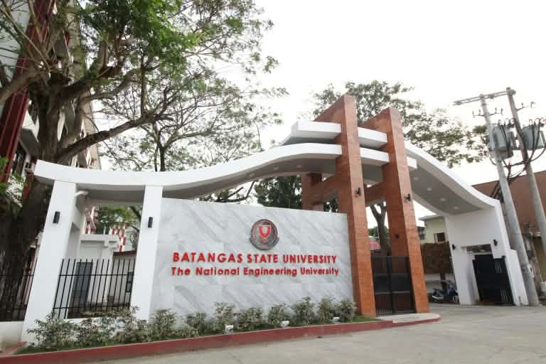

University Vision
A premier national university that develops leaders in the global knowledge economy.
University Mission
A university committed to producing leaders by providing a 21st century learning environment through innovations in education, multidisciplinary research, and community and industry partnerships in order to nurture the spirit of nationhood, propel the national economy, and engage the world for sustainable development.

The Red Spartans is the official mascot of the university. It was launched on 23 September 2014 during the 111th Foundation Anniversary of the institution. Designed by John Jeffrey Alcantara, a Fine Arts major of the university, it was officially registered at the Intellectual Property Office of the Philippines on 15 April 2016 with Certificate of Registration No. 4/2014/00013631.
Campus

Embodying the university campus of the future, BatStateU-Alangilan boasts a 5.62-hectare campus with a rich history of excellence in engineering and technology education, which has produced around 200 topnotchers in engineering and is a consistent top-performing school in mechanical engineering over the years. It is home to over 17,000 students under the College of Engineering, College of Architecture, Fine Arts and Design, College of Engineering Technology, and College of Informatics and Computing Sciences.
COE
The College of Engineering at Batangas State University, The National Engineering University (BatStateU The NEU), is a recognized leader in engineering education, known for producing topnotchers and globally competitive graduates. With a strong foundation in innovation, sustainability, and nation-building, the college fully implements outcomes-based education and integrates technopreneurship into its curricula to equip students with 21st-century skills.
CAFAD
The College of Architecture, Fine Arts and Design is the premier college that offers the flagship programs of the university. It is a pioneer in the full implementation of outcomes-based teaching and learning and the integration of Technopreneurship in its curricula, with three centers of excellence and development and a number of graduates topping national licensure and certification examinations.
CET
The College of Engineering Technology is the first college established in the university, and has since proven to be a premier producer of well-rounded and globally competitive professionals who meet local, national, and international demands for skilled workers who significantly contribute to the manpower resources in response to the rapid industrialization of the modern world.
CICS
The College of Informatics and Computing Sciences offers ITE graduate and undergraduate programs, facilitated by highly competent faculty members catering to over 2,000 Information Technology and Computer Science students. The college focuses on the technical aspects and real-world applications of artificial intelligence, machine learning, deep learning, and security.